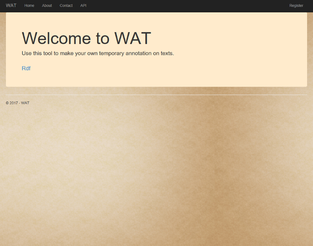
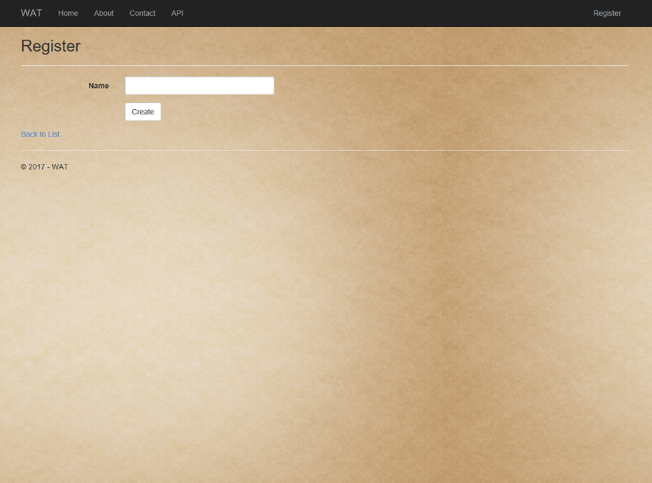
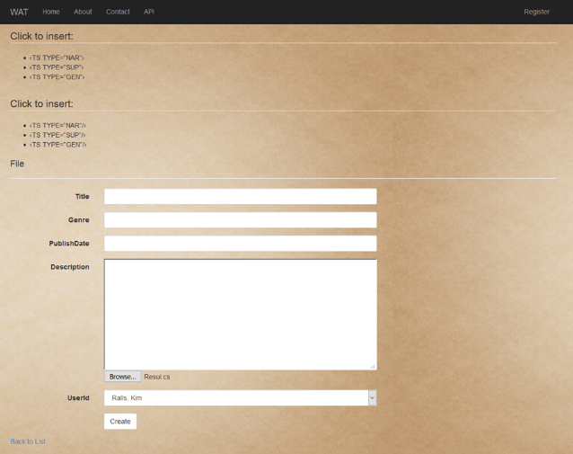
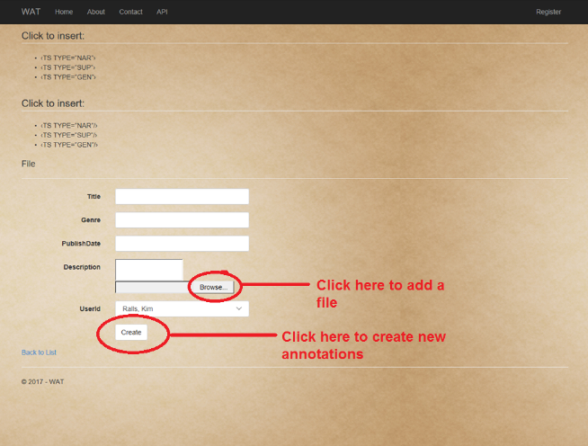
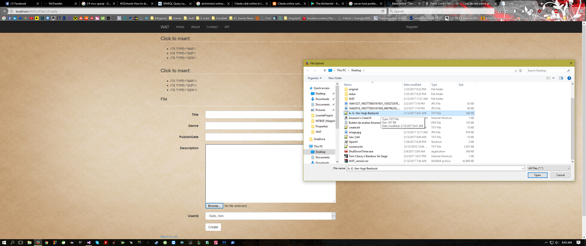
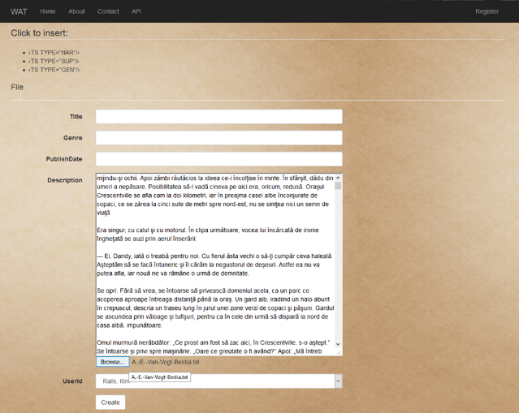
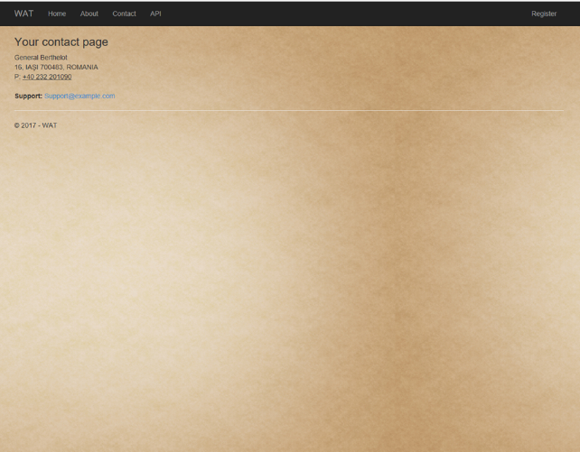
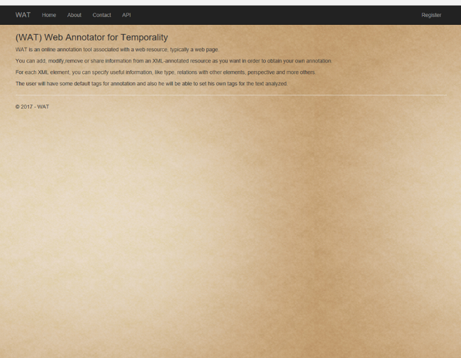

Using our HOME PAGE you will find a easy way to Register/Login

If you didn't have already an account, you will need to create one using REGISTER page.

Here you will provide some infos about you like username.
After this you will be redirectionated to ANNOTATION page.
The annotation page is available only after login.

Import one file from your computer and start to add your oun annotations for temporality.



Now you can add your annotations for temporality in text.
TYPE refers to a classification of developments and may have one or more values (simplified with respect to that in (Macovei and Cristea, 2016)) in the following set:
--- NAR - for typical narrations and flashbacks (remembers) in which the story time flows constantly ahead, and the development is a reality seen or believed by a narattor; invented realities, like in movies, plays or novels, which are told by a player also belong to this category, but their time limits have no connection with the current story time; a statical description in which there is no action is also of this type, since it describes a reality seen by the owner of the PERspective;
--- SUP - for suppositions, speculations, dreams, hopes, sensations (where the time is vaguely attached to a world - plausible, imaged, supposed or dreamt); the development is not lived by the narrator, it only develops in her/his mind;
--- GEN - for general knowledge (where there is no time anchor, only statements about generally accepted things); usually the main actors do not appear in this type of development and the story line does not go ahead.
TYPE is important in the reconstruction of time tracks attached to characters. Usually, TTs of some main character do not include GEN segments, and whether they are of type NAR or SUP may influence the credibility of characters’ story reconstruction.
When you will finish, you can save your work using SAVE button.
You can contact us using the infos from contact page.

For more, please read the About page.
